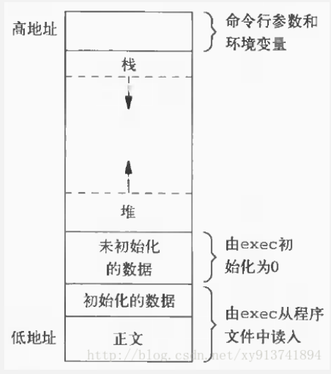
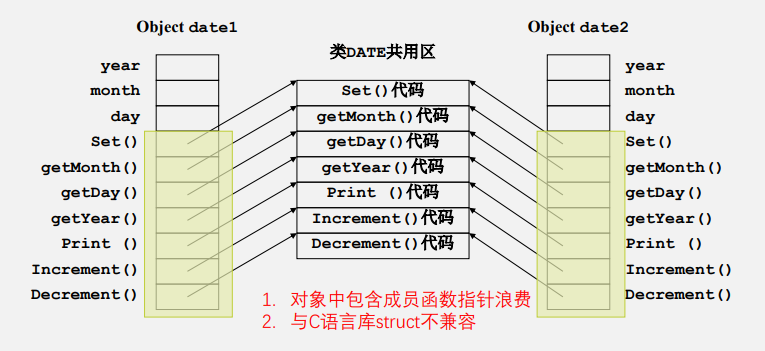

第一周
- I/O（cin、cout）
- namespace（多个同名变量）（必考，给一段代码问最后哪些变量的值是多少）
- 引用（写个函数，可以直接交换两个数的值）
- 指针和引用的区别（01：22）
- 相同：可以使一个函数向调用者返回多个数值。
- 不同：原理不同。引用传递中，形参、实参实质为同一变 量，或者说是为某个变量起多了一个名字。而使用指针作 函数参数，则是使被调用函数获得某变量的地址，从而使 用这个地址访问这个变量。
- 从返回值的角度看，引用形参比利用指针方便。
- const和constexpr（01：26、27）
- auto（01：28）
第二周
- 什么是抽象（04：4）
- Data abstraction：只关心该数据“是什么”及“如何使用”，而 不关心它是如何运作的。
- Control abstraction：只关心这个行为能够为我们带来什么，而 不关心这个行为的具体实现方法。
- 抽象数据类型（ADT）的定义、组成（02：5）
- 在程序设计中，对于被抽象的数据，称为抽象数据类型 （Abstract Data Type, ADT）。
- 一种ADT应具有
- 说明部分（说明该该ADT是什么及如何使用）：说明部分描述 数据值的特性和作用于这些数据之上的操作。ADT的用户仅须 明白这些说明，而无须知晓其内部实现。
- 实现部分。
- 类的成员应该定义为私有还是公有？（02：12）
- 结构体和类的区别（02：13、14）
- C中的结构体只能包含变量，而C++中的类除了包含变量，还能包含函数
- 结构体定义出来的变量还是叫变量，而类定义出来的变量叫对象
- 类的成员函数的定义（在类定义内部进行定义和在类定义外部进行定义的区别）（02：16）
- 类的私有成员变量的访问和修改（通过get和set函数）
- 类的静态成员变量（初始化，值的修改）（02：28、30、32）
第三周
- 新类型：bool
- 用cout输出的结果是什么？
- 函数重载（03：3、4）（必考）
- 函数的默认参数（03：5）（必考）
- 主要是判断默认参数的位置是否正确，放位置不符合规范会报错
- string字符串
- 本质是类
- 几种构造方法：默认构造、cstring构造、同类对象构造、int，char作为参数构造
- public、private与访问控制（必考）
- 公有成员在程序中类的外部是可访问的。您可以不使用任何成员函数来设置和 获取公有变量的值
- 私有成员变量或函数在类的外 部是不可访问的，甚至是不可 查看的。只有类和友元函数可 以访问私有成员。 默认情况下，类的所有成员都 是私有的。例如在右面的类中， width 是一个私有成员，这意 味着，如果您没有使用任何访 问修饰符，类的成员将被假定 为私有成员。
- 构造函数（默认、带参数）（03：代码全部敲一遍）
- 如果设计的类没有构造函数，C++编译器会自动为该类型建立一个缺省构造函数。该构造 函数没有任何形参，且函数体为空。应该养成编写构造函数的习惯。
- 析构函数（ 每次删除所创建的对象时执行）
- PS：理论和实验都很喜欢考构造函数、析构函数，一定要搞明白
- this指针
- 在 C++ 中，每一个对象都能通过 this 指针来访问自己的地址。this 指针是所有成 员函数的隐含参数。因此，在成员函数内部，它可以用来指向调用对象。
- 友元函数没有 this 指针，因为友元不是类的成员。 只有动态成员函数才有 this 指针。 （TODO)
- 当成员函数参数与成员数据重名时， 必须用 this 访问成员数据
第四周
-
程序内存布局与对象（变量）存放位置（记住结论即可，不是这门课程的重点，原理会在计算机组成原理课程中深入学习）(04：2、3)
-
正文（ 即代码，函数实现，库实现，字符串等资源。 ）
-
静态变量（对象）
-
编译阶段初始化数据
-
用零初始化
-
栈（Stack）
-
函数参数，自动变量（对象） 存放在栈里面
-
堆（Heap）
-
动态变量（对象）存放在堆里面，由 stdlib.h 管理
-
这个布局图可以记一下，考的概率不大

-
动态变量与对象指针
- 为变量申请内存（new）
- 使用变量（解引用）
- 释放内存（delete，matrix上机考试会检查内存泄漏）
-
什么是野指针
- 指针指向的位置是不可知的（随机的、不正确的、没有明确限制的）指针变量在定义时如果未初始化，其值是随机的
- 指针变量在定义时如果未初始化，其值是随机的， 意味着指针指向了一个地址是不确定的变量 ， 此时去解引用就是去访问了一个不确定的地址，所以结果是不可知的。
- 课件（04：16）给出的是另一种例子，已经释放内存后尝试解引用）
-
c++ 11 中显式默认设置的函数和已删除的函数（关键字=default和=delete）
- 在C++的类中，有四类特殊的成员函数：① 默认构造函数；② 拷贝构造函数；③ 拷贝赋值函数（operator=）；④ 析构函数；它们控制着类的实例的创建、初始化、拷贝以及销毁。
- 如果显式声明了任何构造函数，则不会自动生成默认构造函数。
- 如果显式声明了虚拟析构函数，则不会自动生成默认析构函数。
- 如果显式声明了移动构造函数或移动赋值运算符，不自动生成复制构造函数/复制赋值运算符。
- 如果显式声明了复制构造函数、复制赋值运算符、移动构造函数、移动赋值运算符或析构函数，不自动生成移动构造函数/移动赋值运算符。
- 通过关键字=default，可以编译器会隐式生成一个版本，在代码更加简洁的同时，编译器隐式生成的版本的执行效率更高。
- 通过关键字=delete，可以标记不想被类实例调用的函数（例如拷贝构造和拷贝赋值），相当于删除了它们。
- 放一个讲的很详细的链接 https://www.bilibili.com/read/cv13912639
-
第五周
-
构造函数的列表初始化
- 使用的好处： 使用初始化列表少了一次调用默认构造函数的过程，这对于数据密集型的类来说，是非常 高效的。
- 必须使用初始化列表
- 常量成员：只能初始化不能赋值
- 引用类型：必须在定义时进行初始化，且不能重新赋值
- 没有默认构造函数的类类型： 使用初始化列表可以不必调用默认构造函数来初始 化，而是直接调用拷贝构造函数初始化
- 初始化顺序
- 按照在类中出现的顺序，而不是在初始化列表中出现的顺序（PPT有例题）
-
对象的内存布局
- 全局数据区、代码区、栈区、堆区（自由存储区）
- 全局数据区存放全局变量，静态数据和常量
- 所有类成员函数和非成员函数代码存放在代码区
- 为运行函数而分配的局部变量、函数参数、返回数据、返回地址等存放在栈区
- 余下的空间都被称为堆区
- 在类的定义时，类的成员函数被放在代码区。
- 类的静态成员变量在全局数据区。
- 非静态成员变量在类的实例内，实例在栈区或者堆区。
- 虚函数指针、虚基类指针在类的实例内，实例在栈区或者堆区。
- 类的实例如果是定义的类变量，则在栈内存区，
- 如果是new出来的类指针，则在堆内存区，同时引用会保存在栈里。

- 对象方法静态联编：指在编译阶段，就能直接使 用代码段函数地址调用动态对象的方法。该方法仅需要向非静态成员函数传送this指针，即可用实现静态调用。
- 优势：
- 对象布局与C结构内存布局一致，使得内存 中对象便于与其他语言程序库兼容
- 高性能
- 全局数据区、代码区、栈区、堆区（自由存储区）
-
拷贝构造函数
-
形参类型为该类类型本身，参数按引用传递（避免在函数调用过程中生成形参副本，一般声明为const）
C::C(const C& obj); -
缺省拷贝构造函数：逐位复制
-
几种应用场景（05：14、15、16）
-
浅拷贝与深拷贝的概念、区别及实现（考点）
-